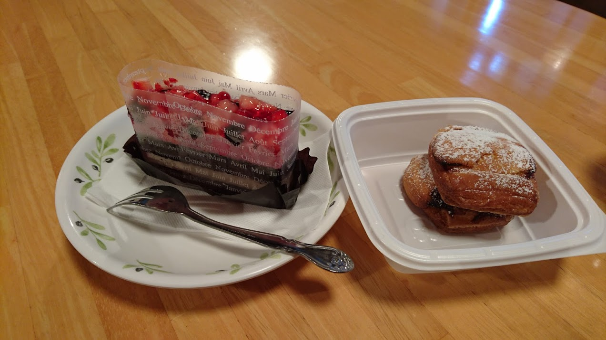
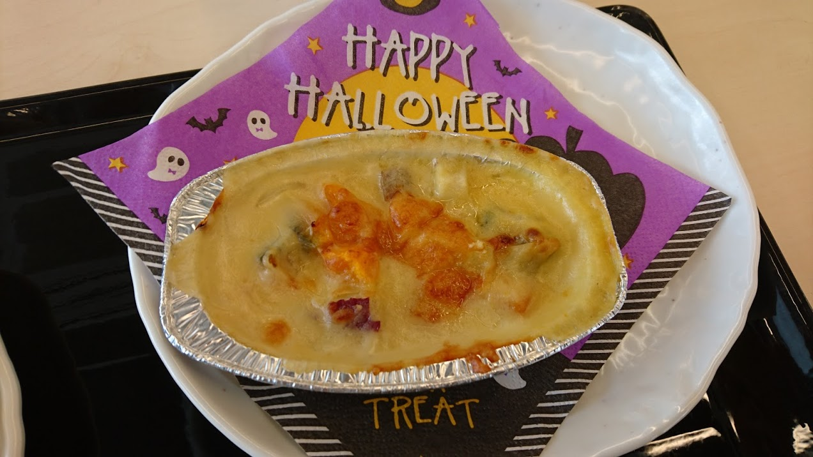

高知散歩
～懐かしのキャンパス巡り～
11/2 2020
カテゴリー：サークル長の自主練
 高知工科大学 永国寺キャンパス 中庭
高知工科大学 永国寺キャンパス 中庭
昨今の新型コロナウイルス感染症により、依然として本サークルは活動は制限されていますので、個人的に散歩をしてきました。その時巡ったところや名所をご紹介できればなと思います。
上の写真は高知工科大学永国寺キャンパスの中心？ 中庭です。右側に見えるのが永国寺図書館、左に見えるのか食堂兼体育館です。私はよく体育館の一階にある食堂でよく晩御飯を食べてました。
永国寺キャンパス 学食

当時、私が食べていたデザートと季節限定のグラタンです。味は法政大学の食堂と変わりませんが、緑一杯の庭を目の前にして食べる食事もなかなか美味です。
永国寺キャンパス 教育研究棟

当時一回生であった私はとても気にしていたのですが、こちら高知県立大学の学生と一緒に使っているのです。つまり、一つのキャンパスに２つの大学が共存している、なんとも珍しいキャンパスでした。といっても運営元（高知県公立大学法人）は一緒なのですが…
 JR高知駅南口
JR高知駅南口
永国寺キャンパスから歩いて10分ほどの距離にJR高知駅があります。高知駅はとても小さく、四国の中で一番活気がないのでは？ と感じてしまうほど何もないです。いや、坂本龍馬像とコーナンがあるから何もないわけではないか…
そんなことは置いといて、お腹も減ってきたので高知で美味しいうなぎ屋さんに行ってみたいと思います。
 高知では有名なうなぎ屋さん『かね春』
高知では有名なうなぎ屋さん『かね春』
こちらバナナマンの日村さんも訪れたことがあるほど有名なお店です。（TBS系番組『バナナマンのせっかくグルメ‼』で紹介）いつも混んでいるそうで（高知に住んでいた時は知らなかった…）僕がお昼の12時に行ったときには最低2時間待ちという驚異の人気ぶり。しかも、僕の3つ後に来た人は売り切れになってしまったみたいで、僕はぐっとタイミングで来れたみたいです。
楽しかった高知旅もそろそろおしまい。高知空港に向かって、帰路につこうと思います。
 高知龍馬空港
高知龍馬空港
さてさて空港に戻ってきました。高知は坂本龍馬が有名ですので、空港の名前にも『龍馬』を使うなど、県全体を上げて龍馬アピールしてきます(笑)

いつも高知へ来る度に前の大学の広告が大きくあるので、少し照れ臭く感じてしまいます。もう通っていない大学であり、母校とも言い難いですし、なんとも言えない気持ち…。
通常のサークル活動では飛行機に乗って西日本に行く！ といったことは全くありません！どうぞご安心を。基本的には東京都心あたりをふらふら散歩しているサークルですので、ぜひご興味があったらツイッターなども確認してみてくださいね。